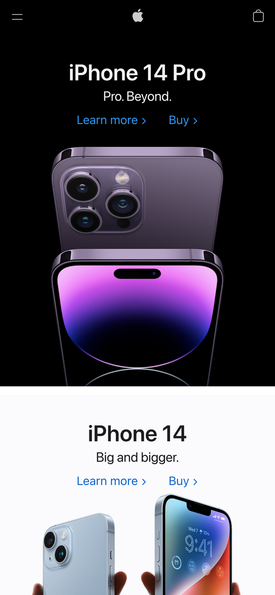
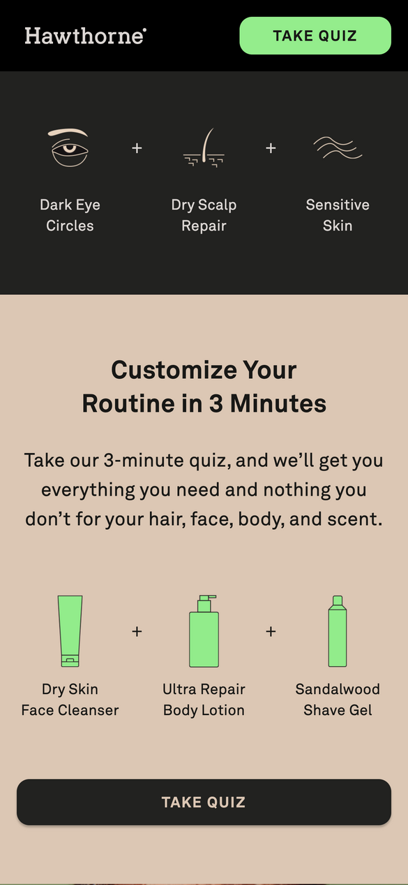

White Space and Clean Design
Apple
Apple's website is a great example of applying the principle of "White Space and Clean Design". The hompage is not clutterd, / showing only a handful of elements with plenty of blank space arount them. This makes the page look very simple and clean, / drawing focus to only the few important elements on the site.
Visual Hierarchy
Headspace
Headspace's website does a great job of using visual heirarchy in their design. The first thing that catches our attention / is there product image and heading. The second thing we see is the call to action buttons, with their free trial in bold. / Third, we see the blue "Try for free button" in the top right. Their application of visual heirarchy draws your attention / to the main actions they want people to take on their site.
Contrast
Hawthorne
The principle of contrast being applied is evident throughout Hawthornes entire site. The text pops within the background / color, and sections are clearly differentiated with strong contrasting colors. The two call to action buttons in the / screenshot stand out thanks to the contrasting colors used.